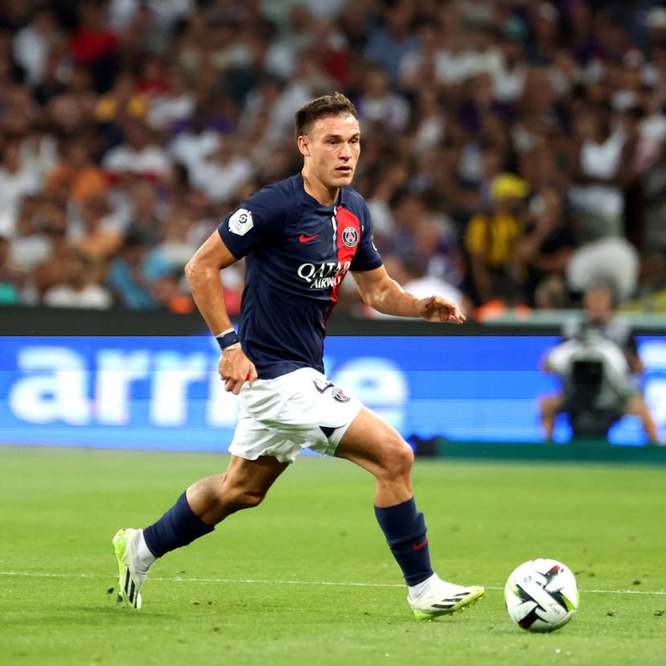

Manu Ugarte, né Manuel Ugarte Ribeiro le 11 avril 2001 à Montevideo(capitale de l'Uruguay),
est un footballeur uruguayen. Il est arrivé au PSG en provenance du club lisboète du
'Sporting Portugal', pendant le mercato estival 2023. Il est en contrat avec le
club parisien jusqu'en 2028.
Depuis le début de la saison, il a fait l'unanimité
chez les fans, se faisant remarquer et saluer par son coach et ses coéquipiers pour ses
nombreuses récupérations de balle, ses passes créatives, mais aussi et surtout
pour son agressivité sur le terrain; ce qui faisait cruellement défaut au PSG la saison
précédent l'arrivée du génie uruguayen.
Au niveau international, Ugarte joue avec la
sélection uruguayenne, depuis la saison 2021-22, entouré là aussi de grandes stars des
clubs européens.